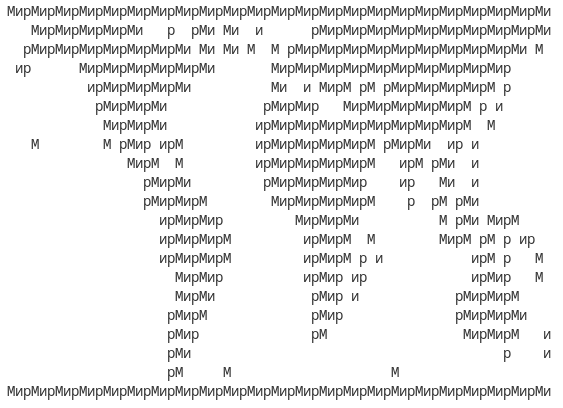

9. Битовая карта.
Условие:
Дано двумерное изображение в виде форматированной строки (см. в коде программы). Его необходимо обработать следующим способом:
- пробелы оставить без изменений;
- все остальные символы заменить символами из пользовательского сообщения.
Пример вывода программы:

Код:
import sys
bitmap = """
....................................................................
************** * *** ** * ******************************
********************* ** ** * * ****************************** *
** ***************** ******************************
************* ** * **** ** ************** *
********* ******* **************** * *
******** *************************** *
* * **** *** *************** ****** ** *
**** * *************** *** *** *
****** ************* ** ** *
******** ************* * ** ***
******** ******** * *** ****
********* ****** * **** ** * **
********* ****** * * *** * *
****** ***** ** ***** *
***** **** * ********
***** **** *********
**** ** ******* *
*** * *
** * *
...................................................................."""
print()
print('Введите сообщение для отображения на экране.')
message = input('Ввод: ')
if message == '': # происходит выход из программы при этом условии
sys.exit()
for line in bitmap.splitlines(): # обойти в цикле разбитый на строки форматированный текст, где line - это отдельная строка текста
for index, item in enumerate(line):
if item == ' ': # условие, при котором пробелы остаются без изменений
print(' ', end='')
else:
print(message[index % len(message)], end="") # с помощью арифметики, каждому соответствующему индексу обрабатываемой строки будет соответствовать свой символ из введённого сообщения
print()
print()